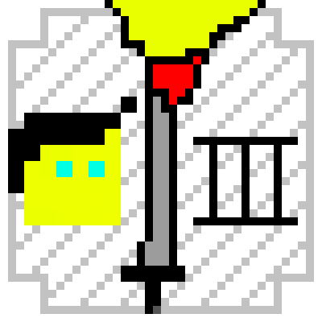

{ KATEGORIA RPG III } [ 0.1.0 ]
Najnowsza wersja
Free to Play! |


Survival + Działki |
©Julunik.pl
/* PRODUKCJE */
Julunik
Pseudonim używany w internecie przez niejakiego Juliana P. urodzonego 16 czerwca 2006 roku. Julunik mając niespełna 12 lat odkrywa, że "Scratch" bardzo przypadł mu do gustu. Stworzył dzięki niemu wiele projektów które go satysfakcjonowały. Pod koniec 8 klasy podstawowej zaczął ciekawić się również językiem programowania C++. - napisał w nim wtedy swój pierwszy "Hello World!" - Po szkole podstawowej dostał się on na profil Technik Informatyk. Zaczynając 1 klasę technikum rozpoczął również intensywnie uczyć się języka C++ poprzez wszelakie poradniki, a im więcej się o nim uczył tym bardziej go to ciekawiło. Druga klasa technikum przyniosła mu wiele korzyści ponieważ Julunik zaczął posiadać również i w szkole lekcje z programowania w języku jaki zaczął uwielbiać. Opanował on strukturalny jak i obiektowy C++. W między czasie oficjalnie wydawał również na swój profil GameJolt parę swoich projektów i pracował nad kolejnymi innymi i tak aż do końca 3 klasy technikum (używał też programu C++ Builder), ponieważ wraz z końcem 3 klasy technikum Julunik postanowił odchodzić od języka programowania C++ na rzecz uczenia się czegoś nowego - środowiska Unity - w którym wymagana była znajomość języka C#. Julunik szybko łapnął podstawy Unity i szczególnie języka C# z racji że posiadał już jako tako 3 letnią znajomość z językiem C++. Po drodze zahaczył jeszcze o Roblox Studio i język LUA ale nie siedział w tym zbyt długo, jednak nabrał tak samo i tam trochę wprawy. W Unity Julunik swój pierwszy oficjalny projekt nazwał "MININGED" - prosta gra polegająca na zbieraniu surowców "na ślepo" i ulepszaniu różnych rzeczy, posiadała ona swój nietypowy styl/mechaniki co wyróżniało ją na tyle że tak jakby ciężko jest ją skategoryzować. Gra istnieje do dziś jednak póki co jest ona porzucona i poza tym - nie dokończona. Po projekcie "MININGED" Julunik stworzył coś co rozwija do teraz, mianowicie "KATEGORIA RPG III". Nazwa nie mająca zbytnio sensu - i nie dokońca w samej grze znajdzie się coś z RPG - ponieważ może i tytuł nie ma nic zbytnio wspólnego z grą, ale jest po prostu w tym wypadku 2 losowymi słowami z rzymskim dopiskiem 3. Co najwyżej to ta "losowa" nazwa odnosi się jedynie do poprzednich wersji projektów z serii KRPG stworzonych kiedyś - jeszcze na języku C++ - jednak poza tytułem, nie mają ze sobą nic wspólnego. Pobocznie Julunik założył też serwer Minecraft Survival + Działki, bo z racji iż niejaki FullerBread2032 użyczył mu pewien serwer do hostingu... to czemu by nie? Co więcej, Julunik założył serwer Minecraft również z powodu takiego że chce sobie czasem pograć w zwyczajny survival + działki w jego stylu, na jego serwerze, i ewentualnie jeszcze wraz z znajomymi którym serwer też przypadł by do gustu (singleplayer mu nie starczał, chciał spróbować czegoś więcej). Tak oto zakupił domenę "Julunik.pl" i pierwsze do czego była ona użyta to właśnie do tego serwera Minecraft. Jednak od jakiegoś czasu Julunik zapoznał się również i trochę z html, css, i js. Założył też konto na GitHub. Napisał tą stronę, i opublikował ją na swoim GitHub wraz z połączeniem z domeną "Julunik.pl" - Tutaj również pomógł FullerBread2032 z swoim serwerem. - Kończąc ten monolog gdzie pisałem o sobie w trzeciej osobie stwierdzam, że programowanie to moja pasja... Wciąż będę poznawał więcej i tworzył więcej. Zobaczymy co przyniesie przyszłość... Na chwilę obecną tak to gra...